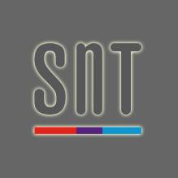
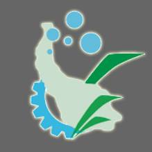

Computer Engineering,
University of Guilan, Iran Department: Department of Computer Engineering,
Faculty of Engineering Supervisor:Prof. Asadollah Shahbahrami, Advisor:Dr. Alireza AkoushidehThesis: Automatic Vehicle Speeding Violation
Detection using Video Processing - Defended on January
20, 2019 (Score: A+)
Bachelor of Science (B.Sc.)
Computer Engineering (Software Engineering stream),
University of Guilan, Iran Department: Department of Computer Engineering,
Faculty of Engineering Thesis: An E-Ticketing System for Medical
Clinics
Employment History

Doctoral Researcher
Interdisciplinary Centre for Security,
Reliability, and Trust (SnT), Luxembourg,
Luxembourg (2022-Now, Full-time)
Working on the project TRANSCEND under the
supervision of Prof. Holger Voos.
Working on various web-based projects using
state-of-the-art frameworks and tools, including
Next.js, React.js, GraphQL, Node.js,
Elasticsearch, Neo4j, MongoDB, etc.

Research Software Engineer
Guilan Science and Technology Park Business
Incubator, Rasht, Guilan, Iran (2019-2021,
Part-time)
Conducting research and working on two projects
titled “Automatic vehicle detection” and
“Automatic car license plate detection and
recognition”
University Lecturer
University of Guilan, Rasht, Guilan, Iran
(2019-2021, Part-time)
Teaching “Computational intelligence” (fours
semesters) and “Computer engineering laboratory”
(one semester) courses to undergraduate students
Teaching Assistant
University of Guilan, Rasht, Guilan, Iran
(2018-2019, Student job)
Assisting professors with instructional
responsibilities, including mentoring,
supervising, and creating teaching content
Working on the android application and website
modules of online stores
Interactive E-Learning Content Developer
Paya Co. (2013-2015) and IEHT Guilan Training
Center (2015-2017), Rasht, Guilan, Iran
(2013-2017, Contract)
Design and implementation of online e-learning
content for customers using ActionScript3, Adobe
Animate, and Storyline
Research Software Engineer
Guilan Science and Technology Park, Rasht, Guilan,
Iran (2013-2016, Part-time)
Conducting research and working on two projects
titled “Automatic vehicle count and traffic
estimation” and “Automatic human tracker for
surveillance systems”
Doctoral Researcher
Working on the project TRANSCEND under the supervision of Prof. Holger Voos.
Full-Stack Developer
Working on various web-based projects using state-of-the-art frameworks and tools, including Next.js, React.js, GraphQL, Node.js, Elasticsearch, Neo4j, MongoDB, etc.
Research Software Engineer
Conducting research and working on two projects titled “Automatic vehicle detection” and “Automatic car license plate detection and recognition”
University Lecturer
Teaching “Computational intelligence” (fours semesters) and “Computer engineering laboratory” (one semester) courses to undergraduate students
Teaching Assistant
Assisting professors with instructional responsibilities, including mentoring, supervising, and creating teaching content
Android and Web Developer
Working on the android application and website modules of online stores
Interactive E-Learning Content Developer
Design and implementation of online e-learning content for customers using ActionScript3, Adobe Animate, and Storyline
Research Software Engineer
Conducting research and working on two projects titled “Automatic vehicle count and traffic estimation” and “Automatic human tracker for surveillance systems”
Help Desk Technician
Providing technical support and troubleshooting services
Student Programmer
Working on the project “Parsiab Search Engine”